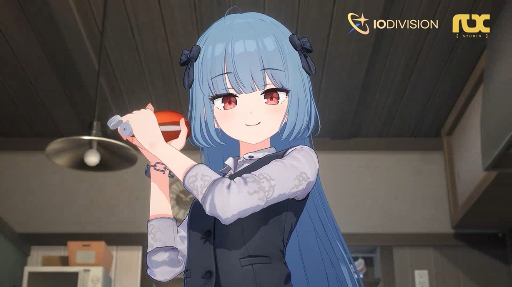
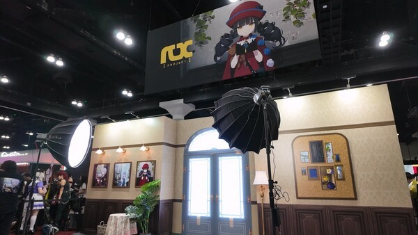

프로젝트 RX 뭐길래? 넥슨게임즈 신작 서브컬처 티저 총정리
안녕하세요, 영원한도시입니다. 요즘 서브컬처 신작 소식이 뜸하다 싶었는데, 최근 넥슨게임즈 쪽에서 들려온 이야기 하나가 눈에 띄어서 오늘은 이걸 정리해보려고 합니다. 바로 '프로젝트 RX'인데요, 이름만 들으면 개발 중에만 쓰는 코드네임 같지만 넥슨게임즈가 공식 보도자료에서부터 계속 이 이름을 정식으로 쓰고 있더라고요. 다만 아직 정식으로 출시된 게임이 아니다 보니, 지금 확인할 수 있는 건 티저 영상과 몇 가지 공식 발표뿐입니다. 있는 정보만 딱 정리해서 짚어볼게요.
넥슨게임즈가 티저 최초 공개 보도자료와 함께 내놓은 이미지가 있는데, 지금 보시는 사진이 바로 그겁니다.

넥슨게임즈가 2025.12.19 배포한 '프로젝트 RX' 티저 최초 공개 보도자료 이미지
이미지 출처: 넥슨게임즈 공식 보도자료 · 네이버 본문엔 받아서 재업로드 권장
1. '프로젝트 RX'는 어떤 게임인가요? - 개발사부터 짚어보면
'프로젝트 RX'는 넥슨게임즈 IO본부 산하 'RX스튜디오'가 개발 중인 서브컬처 신작으로, 코드네임이 아니라 넥슨게임즈가 공식적으로 쓰는 정식 프로젝트명입니다.
IO본부는 원래 '블루 아카이브'를 만든 본부인데, 그 안에 새로 꾸려진 게 RX스튜디오라는 점이 눈에 띄더라고요. 지금까지 공개된 기본 정보를 표로 정리하면 이렇습니다.
| 구분 | 내용 |
|---|---|
| 개발사 | 넥슨게임즈 |
| 담당 스튜디오 | RX스튜디오 (IO본부 산하) |
| 엔진 | 언리얼 엔진 5 기반 3D |
| 핵심 컨셉 | 이세계(異世界) |
| 플랫폼 | PC·모바일·콘솔* |
| 출시일 | 미정 |
* 플랫폼은 2025년 12월 최초 발표 당시 PC·모바일로 소개됐다가, 2026년 5월 14일 넥슨게임즈 공식 1분기 실적 발표에서 콘솔이 처음 언급되며 세 플랫폼으로 늘었습니다. 참고로 같은 해 7월 도쿄게임쇼(TGS) 2026 출전 발표는 이것과는 별개예요 — 출전 여부를 알린 자리였지 플랫폼을 새로 밝힌 자리는 아니었거든요.
2. PD와 AD가 누구길래 - 블루 아카이브 라인업 그대로?
프로젝트 RX는 '블루 아카이브'의 한국·글로벌 서비스를 이끌었던 차민서 PD와, 같은 작품의 캐릭터 디자인·일러스트를 담당했던 유토카미즈(YutokaMizu) AD가 나란히 참여하는 프로젝트입니다.
보도자료에 두 분 이름과 직함이 또렷하게 나와 있는데요, 블루 아카이브를 서비스 단계에서부터 챙겨온 PD와 그 캐릭터들의 얼굴을 그려온 AD가 새 프로젝트에 그대로 넘어온 셈이죠. 그림체나 서비스 운영 톤 면에서 어느 정도 계승점이 있을 것 같긴 한데, 이 부분은 확인된 사실이 아니라 제 개인적인 추측이니 참고만 해주세요.
3. 티저 영상 뜯어보기 - 대사 한마디 없이 뭘 보여줬나
2025년 12월 19일 공개된 프로젝트 RX 공식 티저는 약 30초 분량으로, 대사 없이 캐릭터들이 응접실ㆍ방ㆍ정원에서 일상을 보내는 장면 위주로 흘러가다가, 후반부엔 스킬 이펙트가 살짝 스쳐가며 전투 분위기를 암시합니다.
영상을 재생해보면 대사 한 줄 없이, 캐릭터들이 응접실에서 책을 읽고 방에서 요리를 하고 정원을 거니는 장면이 담담하게 이어집니다. 서브컬처 신작 티저치고는 꽤 정적인 편인데요, 이게 오히려 눈에 띄더라고요. 그러다 영상 끝자락에 가면 분위기가 확 바뀌는데요, 화려한 스킬 이펙트가 잠깐씩 스쳐 지나가면서 방금까지 보던 평온한 일상과 대비되는 긴박한 전투감을 슬쩍 흘립니다. 처음부터 끝까지 전투 얘기는 안 하고 갈 줄 알았는데, 마지막에 살짝 떡밥을 던져둔 셈이더라고요. 그래도 비중 자체는 확실히 생활 콘텐츠 쪽에 실려 있어서, 캐릭터와 함께 지내는 일상에 무게를 두겠다는 방향성은 여전히 또렷하게 느껴집니다.
오늘(2026년 8월 11일) 기준으로 넥슨게임즈 공식 유튜브 채널에 직접 들어가 조회수를 확인해보니, 이 티저 하나가 372,624회를 기록하고 있더라고요. 처음 공개됐던 작년 12월 말 보도에서는 "20만 회 이상"으로 소개됐었는데, 8개월 사이 37만 대까지 꾸준히 늘어난 셈이랍니다. 직접 영상으로 확인하고 싶으시면 넥슨게임즈 공식 유튜브 채널에서 바로 보실 수 있어요(링크는 아래 참고한 곳에 넣어뒀습니다).

보시는 게 넥슨게임즈 공식 유튜브에 올라온 그 티저 영상 화면입니다
이미지 출처: 넥슨게임즈 공식 유튜브 · 네이버 본문엔 받아서 재업로드 권장
티저가 보여준 '이세계(異世界)' 컨셉도 짚고 넘어가면, 넥슨게임즈는 이걸 매력적인 캐릭터와 플레이어가 함께 살아가는 공간으로 구현하는 게 목표라고 설명합니다. 원래 '이세계'는 라이트노벨ㆍ애니메이션 쪽에서 주인공이 다른 세계로 넘어가는 전생ㆍ전이물을 가리킬 때 흔히 쓰는 장르 용어인데요, 프로젝트 RX는 그런 전형적인 전생 서사보다는 전투ㆍ육성보다 캐릭터와 지내는 생활 콘텐츠, 몰입감 있는 스토리텔링 쪽에 무게를 두는 배경 설정 정도로 이 단어를 쓰는 것 같습니다. 주인장 개인적으로는 위에서 본 티저의 잔잔한 연출도 이 방향성과 맞닿아 있어서 오히려 더 끌리더라고요.
4. 지금까지 어떤 행보를 보였나 - 애니메 엑스포부터 도쿄게임쇼까지
프로젝트 RX는 2025년 9월 넥슨게임즈 사내 테스트를 거친 뒤, 올해 7월 미국 애니메 엑스포 2026에 부스를 냈고, 9월 도쿄게임쇼(TGS) 2026에도 출전할 예정입니다.
- 2025년 9월: 넥슨게임즈 사내 테스트 진행, 피드백을 반영하며 개발 중
- 2026년 7월 2일~5일: 미국 로스앤젤레스 컨벤션센터 '애니메 엑스포 2026' 참가 — 게임 세계관을 반영한 서양풍 저택 콘셉트 부스 운영, 캐릭터 일러스트·포토존, 등장인물 코스플레이어 포토타임 진행
- 2026년 9월: '도쿄게임쇼(TGS) 2026' B2C 현장에 '마비노기 모바일'과 함께 출품 예정

보시면 애니메 엑스포 2026 현장의 프로젝트 RX 부스가 이런 모습이었다고 하네요
이미지 출처: 경향게임스(제공: 넥슨게임즈) · 네이버 본문엔 받아서 재업로드 권장
TGS 부스 세부 프로그램은 아직 안 나왔는데요, 넥슨 쪽에서는 티저 사이트를 통해 시연 버전ㆍ무대 이벤트ㆍ굿즈ㆍ참여 프로그램 같은 세부 정보를 순차적으로 공개하겠다고만 밝혔습니다. 구체적인 게 풀리면 그때 다시 정리해서 들고 오겠습니다.
5. 아직 안 나온 정보는요 - 출시일ㆍ과금ㆍ전투 시스템은 아직 미정
출시일과 과금 구조, 전투 시스템 유무는 프로젝트 RX가 아직 공개하지 않았습니다.
- 출시일: 미정입니다. 2025년 12월 19일 보도자료 기준 "2026년 중 추가 정보 공개 예정"이라고만 나와 있고, 오늘(2026.08.11) 기준으로도 구체적인 날짜는 발표되지 않았습니다.
- 과금 구조ㆍ전투 시스템: 공개된 바 없네요.
정보가 많이 없어서 짧게 느껴지실 수도 있는데요, 지금 시점에 확인 안 된 걸 미리 추측해서 적는 것보단 나온 만큼만 정직하게 정리하는 게 맞는 것 같네요.
자주 묻는 질문
Q. 프로젝트 RX 공식 SNS는 어디서 확인할 수 있나요?
IO본부가 새로 개설한 공식 X(트위터) 계정 @project_RX_KR에서 최신 소식을 확인할 수 있습니다. 아직 별도 공식 홈페이지는 없고, 소식은 넥슨게임즈 공식 사이트(nexongames.co.kr) 보도자료로도 함께 나오고 있습니다.
Q. 프로젝트 RX 사전예약(사전등록)은 시작됐나요?
2026년 8월 11일 기준으로는 사전예약ㆍ사전등록 관련 공식 공지가 따로 없습니다. 시작되면 위 공식 X 계정을 통해 먼저 안내될 가능성이 높아 보입니다.
앞으로 소식을 놓치지 않고 챙겨보고 싶으신 분들을 위해 확인 동선도 남겨둘게요 — 공식 X(@project_RX_KR)를 팔로우해두거나, 넥슨게임즈 공식 사이트(nexongames.co.kr) 보도자료를 가끔 들여다보시면 좋을 것 같습니다. 사전예약은 앞서 말씀드린 대로 8/11 기준 아직 시작 전입니다.